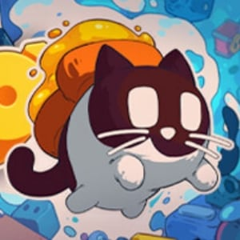

cato: buttered cat
logs
07.sep.24 cato released yesterday!!!! i rushed to get this game which btw it's a small discount! and finally play it! out of all the demos i've played in the past year, this game has been the one that i've been looking forward to the most! 
.jpg)
i have already beaten 1 world out 5. and the first world mostly consisted of the demo areas so now going into the 2nd world is going to be a real treat! nonetheless, i still had a lot of fun replaying the demo levels and i could notice they have made some tweaks here and there. oh and besides the tweaks there is an actual story to this game ?!?!? and the toast speaks to the cat too? did not see that coming but i'm here for it! i'm gonna be quite honest and say i'm not very sure of what is happening...
.jpg)
the inclusion of secret skins you get by doing (optional)challenging puzzles or finding secrets is very nice too! there's skins for the toast as well
.jpg)
17.jul.24i finished the demo yesterday! there was surprisingly A LOT of levels that you could do! 24 to be exact. i fear i might be sounding like a broken record but guys................ i loved it. also the last level was a bit special! it was so cool... my god i really can't wait for this to come out!!!
15.jul.24 wow so i just updated the demo and it's sooo different from i first played it during summer of 2023!
.jpg)
.jpg)
from what i saw on their twitter, the latest version of the demo was released on may 23. so it makes sense why it has changed so much. i played like roughly 10 mins of it but i still really enjoyed it!!! you can also make the cat meow with the r button i believe...
07.jul.24 suddenly remembered that i need to promote this game because i played the demo during july 2023 after seeing it on the 2023 wholesome direct and even made a blog post about the games that caught my attention here!
.jpg)
when starting the demo, i had to navigate the menu in chinese but i still managed to find my way into the game. this isn't my first rodeo with a video game clearly  i'm still not sure where i can change the language or if that was a bug of the demo.... ANYWAYS. i played the demo for a solid 30 mins. and it was so much fun!!!!!! i fell absolutely in love with the mechanics of the player AKA a cat with a butter toast (or jam toast? might have changed recently cus there's something red on my toast when i played the demo...) stuck to them. this is genius. this is innovative. this is what i'm fucking talking about. i also adore the art style they are going for this, it's so adorable.
i'm still not sure where i can change the language or if that was a bug of the demo.... ANYWAYS. i played the demo for a solid 30 mins. and it was so much fun!!!!!! i fell absolutely in love with the mechanics of the player AKA a cat with a butter toast (or jam toast? might have changed recently cus there's something red on my toast when i played the demo...) stuck to them. this is genius. this is innovative. this is what i'm fucking talking about. i also adore the art style they are going for this, it's so adorable.
.jpg)
.jpg)
some puzzles / levels got me thinking for quite a bit and some of them got really interesting quirks to them! i really hope to see this game released someday! the team seems really small and i don't see much of this game anywhere else which is why i said jokingly that i needed to promote this because i really want to play this some day! so i highly recommend playing the demo on steam :]